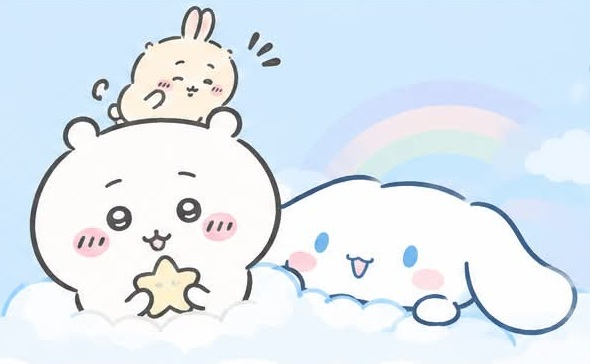
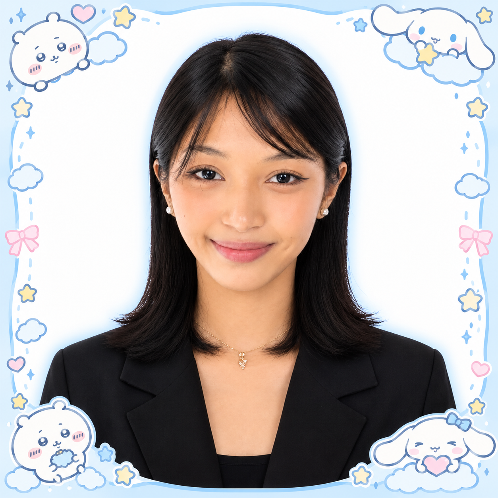
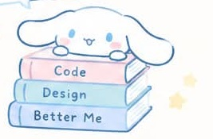

Hello, I’m ♡
Jaydelyn
A student, a dreamer, and a creator
building small things with big hopes.


About Me
I’m a BSIT student who loves coding, designing, and turning ideas into real projects. I enjoy cute things, good food, and spending time with the people I care about.
♧ Philippines♡ IT Student☻ Chill & Create
Small steps
make big dreams! ♡
make big dreams! ♡
